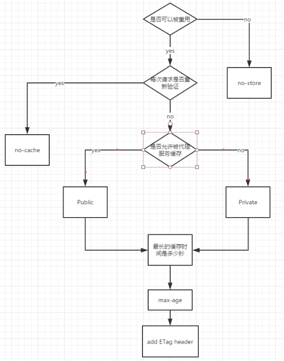

- https://www.jianshu.com/p/54cc04190252
- https://juejin.cn/post/6844903747357769742?utm_source=gold_browser_extension%3Futm_source%3Dgold_browser_extension
一、浏览器静态资源缓存(http 缓存)
1、为什么要缓存？
一般来说，可以对网站的静态资源使用缓存，将静态资源缓存在本地浏览器，优秀的缓存策略可以加快网站响应速度并且节省再次加载资源文件的带宽。 因为不需要再从服务器加载静态资源了，所以缓存策略也可以降低服务器的负载压力。
2、缓存类型
浏览器缓存分为协商缓存和强缓存。
http 缓存在无网络时刷新后将不能使用。
2-1、协商缓存 在加载资源时，浏览器先判断缓存是否命中。如果命中，浏览器会发送一次 http 请求向服务器询问当前的缓存是否是有效的； 如果有效，则可以直接从缓存中加载静态资源。
2-2、强缓存 在加载资源时，浏览器先判断缓存是否命中，如果命中，直接从缓存中读取静态资源，不会向浏览器确认缓存是否有效。这种方式的好处是可以减少一次 http 请求。
它们两者的区别是协商缓存命中了也会再次询问服务器缓存是否有效， 强制缓存只要命中缓存就不再询问服务器。
3、配置
通过设置 http 头信息，可用的参数如下：
Expires
Cache-control
Last-Modified/If-Modified-Since
Etag/If-None-Match
3-1、Expires
- Expires 是 http1.0 提出的一个表示资源过期时间的 header，它描述的是一个绝对时间，由服务器返回，用 GMT 格式的字符串表示。
- 缺点是由服务器端返回的一个绝对时间，如果客户端和服务器时间相差较大，或者处于不同时区，那么误差就会很大。
3-2、Cache-Control Cache-Control 描述的是一个相对时间，在进行缓存命中的时候，都是利用客户端时间进行判断， 所以相比较 Expires，Cache-Control 的缓存管理更有效、安全一些，并且 Cache-Control 优先级高于 Expires。
Cache-Control 相比
Expires优先级更高，更有效，更安全。3-3、Last-Modified/If-Modified-Since 要配合 Cache-Control 使用。
Cache-Control: no-cache, 表示不缓存(相当于过期时间为 0，每次都会询问服务器)
Last-Modified(在响应头)：标示这个响应资源的最后修改时间。
If-Modified-Since(在请求头)：当缓存过期且发现资源具有 Last-Modified 声明，则向服务器发送请求，并带上 If-Modified-Since，表示请求时间。服务器收到请求后，将被请求资源的最后修改时间做对比，若最后修改时间较新，则返回 304，若最后修改时间较旧，则返回 200。
3-4、Etag/If-None-Match Etag/If-None-Match 也要配合 Cache-Control 使用。
Etag(在响应头)：服务器响应请求时，告诉浏览器当前资源在服务器的唯一标识（生成规则由服务器决定）。
If-None-Match(在请求头)：当缓存过期时并且发现资源具有 Etag 声明，则向服务器发送请求，并带上 If-None-Match： Etag 的值。服务器收到请求后与资源的 Etag 进行比对，决定返回 200 或 304。
4、为什么要使用Etag？
使用 ETag 可以解决 Last-modified 存在的一些问题：
- 某些服务器不能精确得到资源的最后修改时间，这样就无法通过最后修改时间判断资源是否更新。
- 如果资源修改非常频繁，在秒以下的时间内进行修改，而 Last-modified 只能精确到秒。
- 一些资源的最后修改时间改变了，但是内容没改变，使用 ETag 就认为资源还是没有修改的。
4、用户行为与缓存
- Last-Modified/Etag 只有在用户点击 Ctrl + F5 的时候，缓存会失效，
- 而 Expires/Cache-Control 在用户点击 F5、Ctrl + F5 或者点击刷新按钮的时候缓存都会失效，其他情况比如地址栏回车、新打开窗口、前进后退按钮 Last-Modified/Etag 与 Expires/Cache-Control 的缓存都是有效的。
5、应用场景
用于缓存页面的静态资源，html, css, js, image 等。
6、使用缓存的流程

7、该怎么选择缓存

二、用户数据本地存储
1、localStorage/sessionStorage 2、cookie 3、indexDB
三、应用程序缓存(application cache)
HTML5 提供一种 应用程序缓存 机制，使得基于 web 的应用程序可以离线运行。
开发者可以使用 Application Cache (AppCache) 接口设定浏览器应该缓存的资源并使得离线用户可用。
在处于离线状态时，即使用户点击刷新按钮，应用也能正常加载与工作。
1、使用应用缓存可以得到以下益处：
- 离线浏览: 用户可以在离线状态下浏览网站内容。
- 更快的速度: 因为数据被存储在本地，所以速度会更快。
- 减轻服务器的负载: 浏览器只会下载在服务器上发生改变的资源。
2、application cache 的使用会修改文档的加载过程：
- 1、如果应用缓存存在，浏览器直接从缓存中加载文档与相关资源，不会访问网络。这会提升文档加载速度。
- 2、浏览器检查清单文件列出的资源是否在服务器上被修改。
- 3、如果清单文件被更新了, 浏览器会下载新的清单文件和相关的资源。 这都是在后台执行的，基本不会影响到 webapp 的性能。
3、下面详细描述了加载文档与更新应用缓存的流程：
- 3-1、当浏览器访问一个包含 manifest 特性的文档时，如果应用缓存不存在，浏览器会加载文档，然后获取所有在清单文件中列出的文件，生成应用缓存的第一个版本。
- 3-2、对该文档的后续访问会使浏览器直接从应用缓存(而不是服务器)中加载文档与其他在清单文件中列出的资源。 此外，浏览器还会向 window.applicationCache 对象发送一个 checking 事件，在遵循合适的 HTTP 缓存规则前提下，获取清单文件。
- 3-3、如果当前缓存的清单副本是最新的，浏览器将向 applicationCache 对象发送一个 noupdate 事件，到此，更新过程结束。 注意，如果你在服务器修改了任何缓存资源，同时也应该修改清单文件，这样浏览器才能知道它需要重新获取资源。
- 3-4、如果清单文件已经改变，文件中列出的所有文件—也包括通过调用 applicationCache.add() 方法添加到缓存中的那些文件—会被获取并放到一个临时缓存中， 遵循适当的 HTTP 缓存规则。对于每个加入到临时缓存中的文件，浏览器会向 applicationCache 对象发送一个 progress 事件。 如果出现任何错误，浏览器会发送一个 error 事件，并暂停更新。
- 3-5、一旦所有文件都获取成功，它们会自动移送到真正的离线缓存中，并向 applicationCache 对象发送一个 cached 事件。 鉴于文档早已经被从缓存加载到浏览器中，所以更新后的文档不会重新渲染，直到页面重新加载(可以手动或通过程序).
4、引用一个缓存清单文件 web 应用中的 manifest 特性可以指定为缓存清单文件的相对路径或一个绝对 URL(绝对 URL 必须与应用同源)。 缓存清单文件可以使用任意扩展名，但传输它的 MIME 类型必须为 text/cache-manifest。
四、ServiceWorker
可以把 Service Worker 理解为一个介于客户端和服务器之间的一个代理服务器。 在 Service Worker 中我们可以做很多事情，比如拦截客户端的请求、向客户端发送消息、向服务器发起请求等等，其中最重要的作用之一就是离线资源缓存。
1、与 WebWorker 的区别
对于 Service Worker，了解过 Web Worker 的同学可能会比较好理解。它和 Web Worker 相比，有相同的点，也有不同的地方。
- 1-1、相同：
- （1）Service Worker 工作在 worker context 中，是没有访问 DOM 的权限的，所以我们无法在 Service Worker 中获取 DOM 节点，也无法在其中操作 DOM 元素； 我们可以通过 postMessage 接口把数据传递给其他 JS 文件；
- （2）Service Worker 中运行的代码不会被阻塞，也不会阻塞其他页面的 JS 文件中的代码；
- 1-2 不同：
- Service Worker 是一个浏览器中的进程而不是浏览器内核下的线程，因此它在被注册安装之后，能够被在多个页面中使用，也不会因为页面的关闭而被销毁。 因此，Service Worker 很适合被用与多个页面需要使用的复杂数据的计算——购买一次，全家“收益”。
web worker ---> 线程 shareWebWorker ---> service worker ---> 进程，能被多个页面使用
2、注意
出于对安全问题的考虑，Service Worker 只能被使用在 https 或者本地的 localhost 环境下。
3、使用
if ('serviceWorker' in window.navigator) {
navigator.serviceWorker
.register('./sw.js', { scope: './' })
.then(function (reg) {
console.log('success', reg);
})
.catch(function (err) {
console.log('fail', err);
});
}五、常用的缓存
- 1、http 缓存是基于 HTTP 协议的浏览器文件级缓存机制。
- 2、websql 这种方式只有较新的 chrome 浏览器支持，并以一个独立规范形式出现
- 3、indexDB 是一个为了能够在客户端存储可观数量的结构化数据，并且在这些数据上使用索引进行高性能检索的 API
- 4、Cookie 一般网站为了辨别用户身份、进行 session 跟踪而储存在用户本地终端上的数据（通常经过加密）
- 5、Localstoragehtml5 的一种新的本地缓存方案，目前用的比较多，一般用来存储 ajax 返回的数据，加快下次页面打开时的渲染速度
- 6、Sessionstorage 和 localstorage 类似，但是浏览器关闭则会全部删除，api 和 localstorage 相同，实际项目中使用较少。
- 7、application cache 是将大部分图片资源、js、css 等静态资源放在 manifest 文件配置中
- 8、cacheStorage 是在 ServiceWorker 的规范中定义的，可以保存每个 serverWorker 申明的 cache 对象
- 9、flash 缓存 这种方式基本不用，这一方法主要基于 flash 有读写浏览器端本地目录的功能